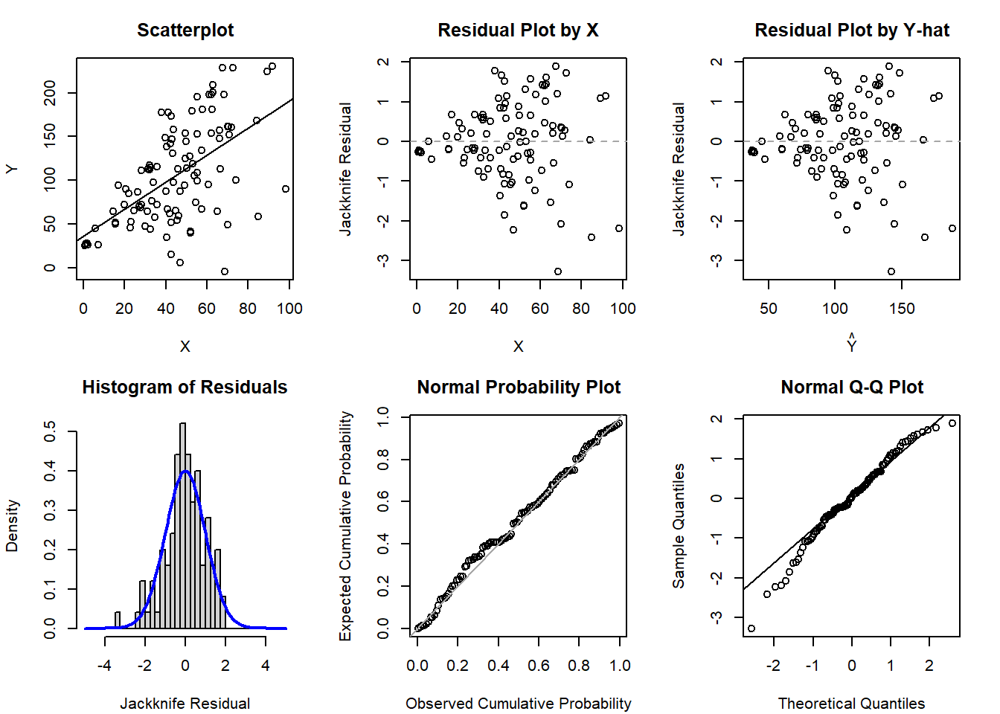
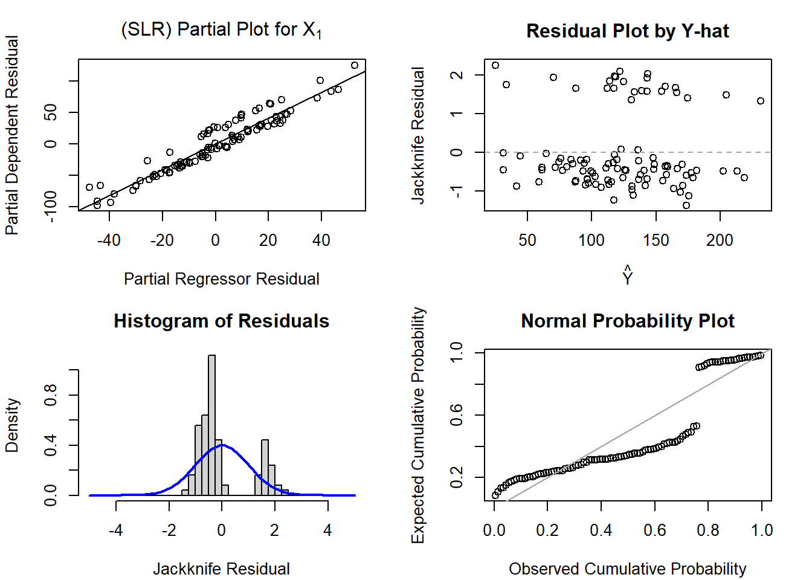
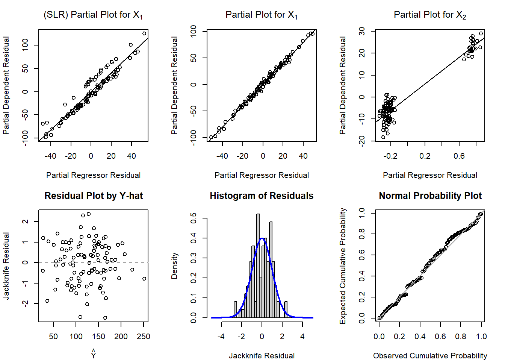

This page is part of the University of Colorado-Anschutz Medical Campus’ BIOS 6618 Labs collection, the mini-lecture content delivered at the start of class before breaking out into small groups to work on the homework assignment.
What’s on the docket this week?
This week we will present an example of code to generate the diagnostic plots we presented in the lecture videos.
Diagnostic Plots
One of the ways we can evaluate our assumptions of linearity, homoscedasticity, and normality are with plots. There are many different plots that may be of use, but we presented 4 that are particularly useful in our lectures:
\(Y\)-\(X\) scatterplot for SLR or partial plots for MLR
Scatterplot of the residuals and \(X\) for SLR or scatterplot of \(\hat{Y}\) and residuals for MLR (and honestly SLR too)
Histogram of the residuals
PP or QQ plot of the residuals
Simple Linear Regression Example
We will start with an example for SLR where we violate the assumption of homoscedasticity:
Code
# Simulate some data with increasing variance for regression modelsset.seed(1102)x1 <-abs(rnorm(n=100, mean=50, sd=20))# simulate our error to have increasing variance based on increasing values of x1error <-rnorm(n=100, mean=0, sd=x1) y <-25+2*x1 + errormod1 <-glm(y ~ x1)
Code
par(mfrow=c(2,3), mar=c(4.1,4.1,3.1,2.1))## Scatterplot of Y-Xplot(x=x1, y=y, xlab='X', ylab='Y', main='Scatterplot', cex=1); abline( mod1 )## Scatterplot of residuals by Xplot(x=x1, y=rstudent(mod1), xlab='X', ylab='Jackknife Residual', main='Residual Plot by X', cex=1); abline(h=0, lty=2, col='gray65')## Scatterplot of residuals by predicted valuesplot(x=predict(mod1), y=rstudent(mod1), xlab=expression(hat(Y)), ylab='Jackknife Residual', main='Residual Plot by Y-hat', cex=1); abline(h=0, lty=2, col='gray65')## Histogram of jackknife residuals with normal curvehist(rstudent(mod1), xlab='Jackknife Residual', main='Histogram of Residuals', freq=F, breaks=seq(-5,5,0.25)); curve( dnorm(x,mean=0,sd=1), lwd=2, col='blue', add=T)## PP-plotplot( ppoints(length(rstudent(mod1))), sort(pnorm(rstudent(mod1))), xlab='Observed Cumulative Probability', ylab='Expected Cumulative Probability', main='Normal Probability Plot', cex=1); abline(a=0,b=1, col='gray65', lwd=1)## QQ-plotqqnorm( rstudent(mod1) ); qqline( rstudent(mod1) )

If you want to create similar figures in SAS, you can use the code (hidden) below (or the default PROC REG output provides many of these figures as well):
Code
/* Y-X scatterplot with LINEAR regression line */PROC GPLOT DATA=amniotic; PLOT lncells*temp; SYMBOL INTERPOL=rl VALUE=dot COLOR=black;RUN;/*-OR-*/PROC SGPLOT DATA=amniotic; REG Y=lncells X=temp;RUN;/* Jackknife Residual Plot versus Predictor, versus Predicted */PROC GPLOT DATA=resids3; PLOT jackknife*(temp pred); SYMBOL VALUE=dot INTERPOL=rl COLOR=black;RUN;/*-OR-*/PROC SGPLOT DATA=resids3; REG Y=jackknife X=temp;RUN;PROC SGPLOT DATA=resids3; REG Y=jackknife X=pred;RUN;/* Histogram of Jackknife Residuals */PROC GCHART DATA=resids3; VBAR jackknife;RUN;/*-OR-*/PROC SGPLOT DATA=resids3; histogram jackknife; density jackknife;RUN;/* Normal Probability Plot of Jackknife Residuals */PROC UNIVARIATE NORMAL PLOT DATA=resids3; VAR jackknife;RUN;
Multiple Linear Regression Example
Let’s simulate some data for a multiple linear regression, but exclude a predictor (i.e., we omitted it from the model because we either don’t have it or we didn’t think to include it initially):
Code
# Simulate some data with increasing variance for regression modelsset.seed(1102)x1 <-rnorm(n=100, mean=50, sd=20)x2 <-rbinom(n=100, size=1, prob=0.3)error <-rnorm(n=100, mean=0, sd=4) y <-25+2*x1 +30*x2 + errormod2 <-glm(y ~ x1)mod3 <-glm(y ~ x1 + x2)
Let’s start with the SLR model where we only fit y ~ x1:
Code
par(mfrow=c(2,2), mar=c(4.1,4.1,3.1,2.1))## X1 Partial Plot SLR with X1 onlyx1_slr_step1 <-glm(y ~1)x1_slr_step2 <-glm(x1 ~1)plot(x=residuals(x1_slr_step2), y=residuals(x1_slr_step1),main=expression('(SLR) Partial Plot for X'[1]), ylab='Partial Dependent Residual', xlab='Partial Regressor Residual')abline(lm(residuals(x1_slr_step1) ~residuals(x1_slr_step2)))## Scatterplot of residuals by predicted valuesplot(x=predict(mod2), y=rstudent(mod2), xlab=expression(hat(Y)), ylab='Jackknife Residual', main='Residual Plot by Y-hat', cex=1); abline(h=0, lty=2, col='gray65')## Histogram of jackknife residuals with normal curvehist(rstudent(mod2), xlab='Jackknife Residual', main='Histogram of Residuals', freq=F, breaks=seq(-5,5,0.25)); curve( dnorm(x,mean=0,sd=1), lwd=2, col='blue', add=T)## PP-plotplot( ppoints(length(rstudent(mod2))), sort(pnorm(rstudent(mod2))), xlab='Observed Cumulative Probability', ylab='Expected Cumulative Probability', main='Normal Probability Plot', cex=1); abline(a=0,b=1, col='gray65', lwd=1)

Now let’s see what happens if we look at the diagnostic plots for y ~ x1 + x2 (while keeping the partial plot for x1 from the SLR for comparison):
Code
par(mfrow=c(2,3), mar=c(4.1,4.1,3.1,2.1))## X1 Partial Plot SLR with X1 onlyx1_slr_step1 <-glm(y ~1)x1_slr_step2 <-glm(x1 ~1)plot(x=residuals(x1_slr_step2), y=residuals(x1_slr_step1),main=expression('(SLR) Partial Plot for X'[1]), ylab='Partial Dependent Residual', xlab='Partial Regressor Residual')abline(lm(residuals(x1_slr_step1) ~residuals(x1_slr_step2)))## X1 Partial Plot MLR with X1+X2x1_mlr_step1 <-glm(y ~ x2)x1_mlr_step2 <-glm(x1 ~ x2)plot(x=residuals(x1_mlr_step2), y=residuals(x1_mlr_step1),main=expression('Partial Plot for X'[1]), ylab='Partial Dependent Residual', xlab='Partial Regressor Residual')abline(lm(residuals(x1_mlr_step1) ~residuals(x1_mlr_step2)))## X2 Partial Plot MLRx2_mlr_step1 <-glm(y ~ x1)x2_mlr_step2 <-glm(x2 ~ x1)plot(x=residuals(x2_mlr_step2), y=residuals(x2_mlr_step1),main=expression('Partial Plot for X'[2]), ylab='Partial Dependent Residual', xlab='Partial Regressor Residual')abline(lm(residuals(x2_mlr_step1) ~residuals(x2_mlr_step2)))## Scatterplot of residuals by predicted valuesplot(x=predict(mod3), y=rstudent(mod3), xlab=expression(hat(Y)), ylab='Jackknife Residual', main='Residual Plot by Y-hat', cex=1); abline(h=0, lty=2, col='gray65')## Histogram of jackknife residuals with normal curvehist(rstudent(mod3), xlab='Jackknife Residual', main='Histogram of Residuals', freq=F, breaks=seq(-5,5,0.25)); curve( dnorm(x,mean=0,sd=1), lwd=2, col='blue', add=T)## PP-plotplot( ppoints(length(rstudent(mod3))), sort(pnorm(rstudent(mod3))), xlab='Observed Cumulative Probability', ylab='Expected Cumulative Probability', main='Normal Probability Plot', cex=1); abline(a=0,b=1, col='gray65', lwd=1)

In SAS we can request the partial plots by simply adding / PARTIAL to our MODEL statement:
Code
PROC REG DATA=dat; MODEL y = x1 x2 / PARTIAL;RUN;
Source Code
---title: "Week 9 Lab"author: name: Alex Kaizer roles: "Instructor" affiliation: University of Colorado-Anschutz Medical Campustoc: truetoc_float: truetoc-location: leftformat: html: code-fold: show code-overflow: wrap code-tools: true---```{r, echo=F, message=F, warning=F}library(kableExtra)library(dplyr)```This page is part of the University of Colorado-Anschutz Medical Campus' [BIOS 6618 Labs](/labs/index.qmd) collection, the mini-lecture content delivered at the start of class before breaking out into small groups to work on the homework assignment.# What's on the docket this week?This week we will present an example of code to generate the diagnostic plots we presented in the lecture videos.# Diagnostic PlotsOne of the ways we can evaluate our assumptions of linearity, homoscedasticity, and normality are with plots. There are many different plots that may be of use, but we presented 4 that are particularly useful in our lectures:1. $Y$-$X$ scatterplot for SLR or partial plots for MLR2. Scatterplot of the residuals and $X$ for SLR or scatterplot of $\hat{Y}$ and residuals for MLR (and honestly SLR too)3. Histogram of the residuals4. PP or QQ plot of the residuals## Simple Linear Regression ExampleWe will start with an example for SLR where we violate the assumption of homoscedasticity:```{r, class.source='fold-show'}# Simulate some data with increasing variance for regression modelsset.seed(1102)x1 <-abs(rnorm(n=100, mean=50, sd=20))# simulate our error to have increasing variance based on increasing values of x1error <-rnorm(n=100, mean=0, sd=x1) y <-25+2*x1 + errormod1 <-glm(y ~ x1)``````{r}#| code-fold: truepar(mfrow=c(2,3), mar=c(4.1,4.1,3.1,2.1))## Scatterplot of Y-Xplot(x=x1, y=y, xlab='X', ylab='Y', main='Scatterplot', cex=1); abline( mod1 )## Scatterplot of residuals by Xplot(x=x1, y=rstudent(mod1), xlab='X', ylab='Jackknife Residual', main='Residual Plot by X', cex=1); abline(h=0, lty=2, col='gray65')## Scatterplot of residuals by predicted valuesplot(x=predict(mod1), y=rstudent(mod1), xlab=expression(hat(Y)), ylab='Jackknife Residual', main='Residual Plot by Y-hat', cex=1); abline(h=0, lty=2, col='gray65')## Histogram of jackknife residuals with normal curvehist(rstudent(mod1), xlab='Jackknife Residual', main='Histogram of Residuals', freq=F, breaks=seq(-5,5,0.25)); curve( dnorm(x,mean=0,sd=1), lwd=2, col='blue', add=T)## PP-plotplot( ppoints(length(rstudent(mod1))), sort(pnorm(rstudent(mod1))), xlab='Observed Cumulative Probability', ylab='Expected Cumulative Probability', main='Normal Probability Plot', cex=1); abline(a=0,b=1, col='gray65', lwd=1)## QQ-plotqqnorm( rstudent(mod1) ); qqline( rstudent(mod1) )```If you want to create similar figures in `SAS`, you can use the code (hidden) below (or the default `PROC REG` output provides many of these figures as well):```{r, eval=F}#| code-fold: true/* Y-X scatterplot with LINEAR regression line */PROC GPLOT DATA=amniotic; PLOT lncells*temp; SYMBOL INTERPOL=rl VALUE=dot COLOR=black;RUN;/*-OR-*/PROC SGPLOT DATA=amniotic; REG Y=lncells X=temp;RUN;/* Jackknife Residual Plot versus Predictor, versus Predicted */PROC GPLOT DATA=resids3; PLOT jackknife*(temp pred); SYMBOL VALUE=dot INTERPOL=rl COLOR=black;RUN;/*-OR-*/PROC SGPLOT DATA=resids3; REG Y=jackknife X=temp;RUN;PROC SGPLOT DATA=resids3; REG Y=jackknife X=pred;RUN;/* Histogram of Jackknife Residuals */PROC GCHART DATA=resids3; VBAR jackknife;RUN;/*-OR-*/PROC SGPLOT DATA=resids3; histogram jackknife; density jackknife;RUN;/* Normal Probability Plot of Jackknife Residuals */PROC UNIVARIATE NORMAL PLOT DATA=resids3; VAR jackknife;RUN;```## Multiple Linear Regression ExampleLet's simulate some data for a multiple linear regression, but *exclude* a predictor (i.e., we omitted it from the model because we either don't have it or we didn't think to include it initially):```{r, class.source='fold-show'}# Simulate some data with increasing variance for regression modelsset.seed(1102)x1 <-rnorm(n=100, mean=50, sd=20)x2 <-rbinom(n=100, size=1, prob=0.3)error <-rnorm(n=100, mean=0, sd=4) y <-25+2*x1 +30*x2 + errormod2 <-glm(y ~ x1)mod3 <-glm(y ~ x1 + x2)```Let's start with the SLR model where we only fit `y ~ x1`:```{r}#| code-fold: truepar(mfrow=c(2,2), mar=c(4.1,4.1,3.1,2.1))## X1 Partial Plot SLR with X1 onlyx1_slr_step1 <-glm(y ~1)x1_slr_step2 <-glm(x1 ~1)plot(x=residuals(x1_slr_step2), y=residuals(x1_slr_step1),main=expression('(SLR) Partial Plot for X'[1]), ylab='Partial Dependent Residual', xlab='Partial Regressor Residual')abline(lm(residuals(x1_slr_step1) ~residuals(x1_slr_step2)))## Scatterplot of residuals by predicted valuesplot(x=predict(mod2), y=rstudent(mod2), xlab=expression(hat(Y)), ylab='Jackknife Residual', main='Residual Plot by Y-hat', cex=1); abline(h=0, lty=2, col='gray65')## Histogram of jackknife residuals with normal curvehist(rstudent(mod2), xlab='Jackknife Residual', main='Histogram of Residuals', freq=F, breaks=seq(-5,5,0.25)); curve( dnorm(x,mean=0,sd=1), lwd=2, col='blue', add=T)## PP-plotplot( ppoints(length(rstudent(mod2))), sort(pnorm(rstudent(mod2))), xlab='Observed Cumulative Probability', ylab='Expected Cumulative Probability', main='Normal Probability Plot', cex=1); abline(a=0,b=1, col='gray65', lwd=1)```Now let's see what happens if we look at the diagnostic plots for `y ~ x1 + x2` (while keeping the partial plot for `x1` from the SLR for comparison):```{r}#| code-fold: truepar(mfrow=c(2,3), mar=c(4.1,4.1,3.1,2.1))## X1 Partial Plot SLR with X1 onlyx1_slr_step1 <-glm(y ~1)x1_slr_step2 <-glm(x1 ~1)plot(x=residuals(x1_slr_step2), y=residuals(x1_slr_step1),main=expression('(SLR) Partial Plot for X'[1]), ylab='Partial Dependent Residual', xlab='Partial Regressor Residual')abline(lm(residuals(x1_slr_step1) ~residuals(x1_slr_step2)))## X1 Partial Plot MLR with X1+X2x1_mlr_step1 <-glm(y ~ x2)x1_mlr_step2 <-glm(x1 ~ x2)plot(x=residuals(x1_mlr_step2), y=residuals(x1_mlr_step1),main=expression('Partial Plot for X'[1]), ylab='Partial Dependent Residual', xlab='Partial Regressor Residual')abline(lm(residuals(x1_mlr_step1) ~residuals(x1_mlr_step2)))## X2 Partial Plot MLRx2_mlr_step1 <-glm(y ~ x1)x2_mlr_step2 <-glm(x2 ~ x1)plot(x=residuals(x2_mlr_step2), y=residuals(x2_mlr_step1),main=expression('Partial Plot for X'[2]), ylab='Partial Dependent Residual', xlab='Partial Regressor Residual')abline(lm(residuals(x2_mlr_step1) ~residuals(x2_mlr_step2)))## Scatterplot of residuals by predicted valuesplot(x=predict(mod3), y=rstudent(mod3), xlab=expression(hat(Y)), ylab='Jackknife Residual', main='Residual Plot by Y-hat', cex=1); abline(h=0, lty=2, col='gray65')## Histogram of jackknife residuals with normal curvehist(rstudent(mod3), xlab='Jackknife Residual', main='Histogram of Residuals', freq=F, breaks=seq(-5,5,0.25)); curve( dnorm(x,mean=0,sd=1), lwd=2, col='blue', add=T)## PP-plotplot( ppoints(length(rstudent(mod3))), sort(pnorm(rstudent(mod3))), xlab='Observed Cumulative Probability', ylab='Expected Cumulative Probability', main='Normal Probability Plot', cex=1); abline(a=0,b=1, col='gray65', lwd=1)```In `SAS` we can request the *partial plots* by simply adding `/ PARTIAL` to our `MODEL` statement:```{r, eval=F}#| code-fold: truePROC REG DATA=dat; MODEL y = x1 x2 / PARTIAL;RUN;```